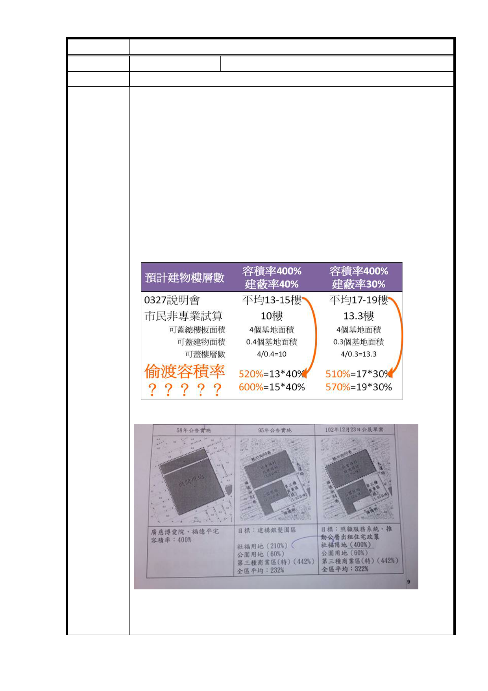

決議
編號
60
陳情人 施○璇
陳情理由
1. 請維持一個基地概念，不要分割不同機關主管分別處理，既
然有重新檢討何不重新分佈，思考避開現有樹木之空地才蓋
。
2. 規劃 11 公尺在南北基地之間道路並未通透至其他道路，效用
不大，請廢除或移至林口街 80 巷之綠帶（且目前規劃也撞上
現有樹叢）。
3. 現鄰近建物都很老舊，面臨使用年限問題，無法承受深度強
度都很大的開發案，既然政府沒錢地方業無法負荷，請回到
低度開發之方向！！否則光是賠償因開發導致建物龜裂的訴
訟金額與影響居民安全議題，就絕非全民樂見。
1 03.4.2
開發不應該是人民悲情的開始
一、 到底是香蕉還是向日葵？
建議辦法
二、我和你可以結黨，但絕無法平均！
用來衡量土地開發強度的容積率
何以得與公園平均之？
三、位於都市土地申請開發或累積開發面積五公頃以上，應實施
- 80 -